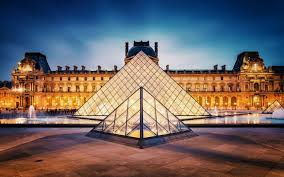

Principal
Geografia
Atracții
Bucătăria
Istoria
Locuri populare
Louvre
Cel mai mare muzeu de artă din lume.

Turnul Eifel
Un simbol al Parisului, construit în 1889.
Moulin Rouge
Moulin Rouge este un cabaret celebru din Paris, fondat în 1889, renumit pentru spectacolele sale de cancan francez, atmosfera boemă și contribuția sa la cultura artistică și de divertisment a Franței.